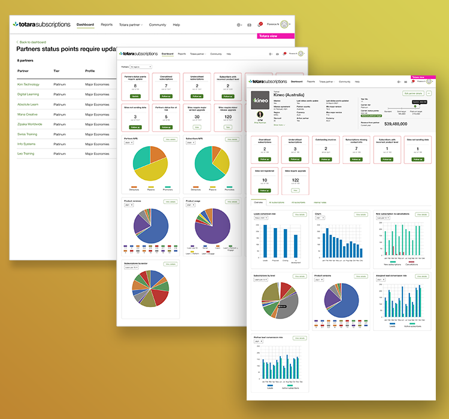
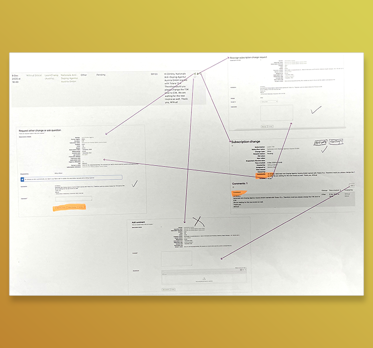
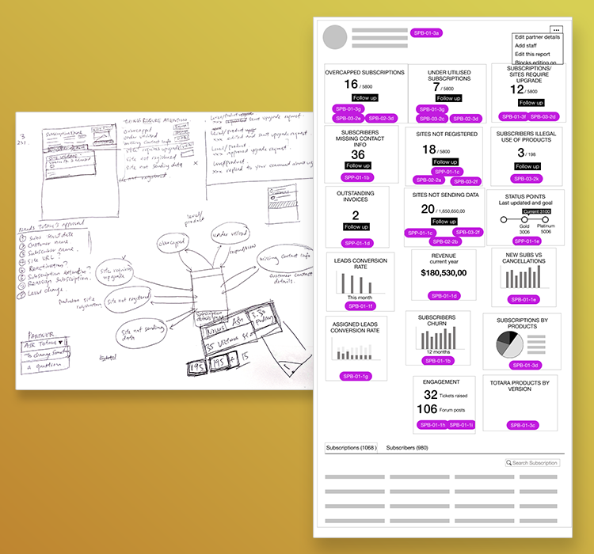
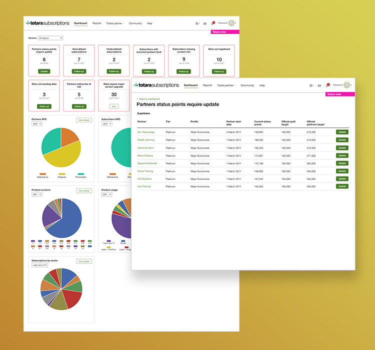
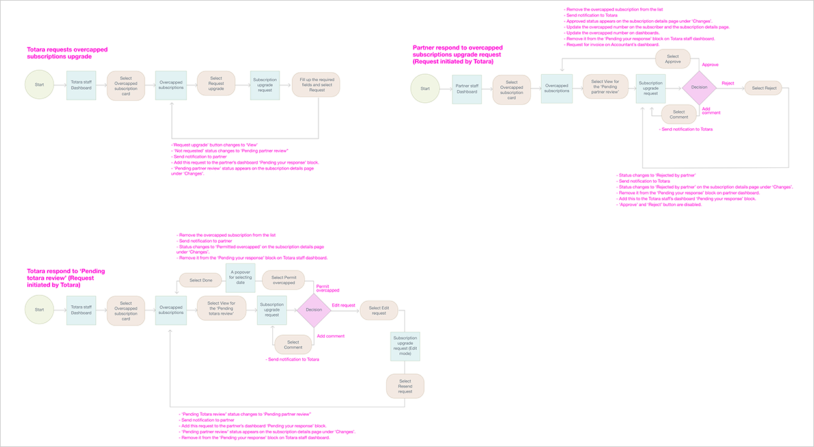
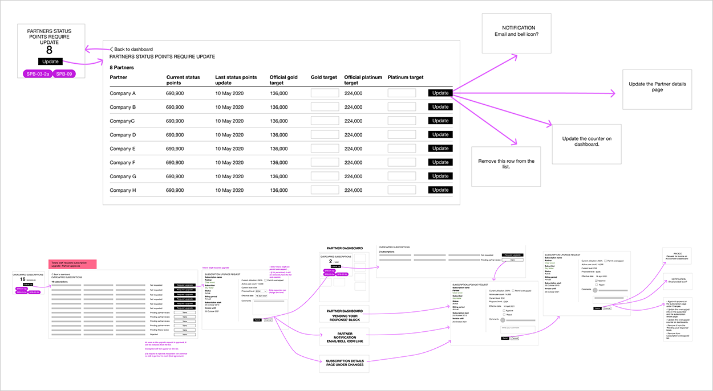
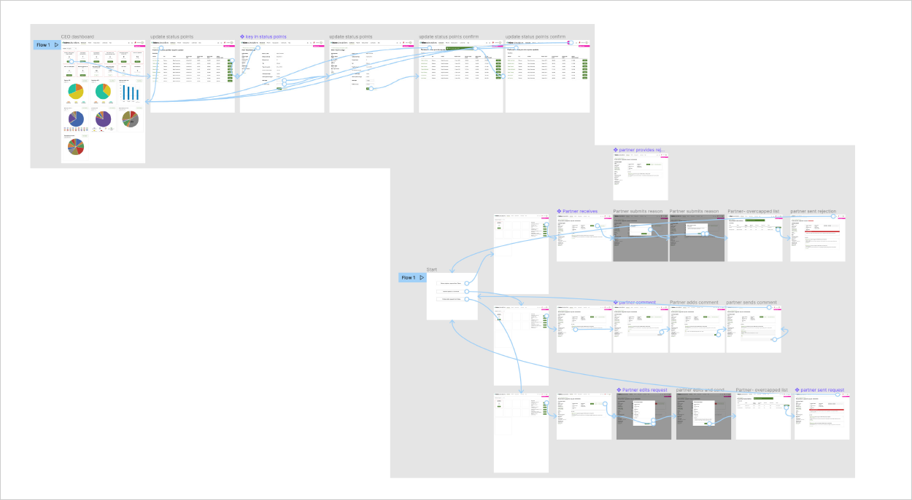

Subscription portal is the most important tool in understanding the health of the business. Having clear and data-driven actionable items is the key for further business growth, partner and subscriber engagement and product(s) development.
The goals are to provide user-friendly and simple design without visual clutter and meaningless information. The portal should provide insights on the company’s health on multiple levels and automatically detect business risks and provide action items when an issue has been detected.

Main areas of responsibility:

The subscription portal had the following pain points that made it hard to understand and use:
My goal was to identify all potential scenarios administrators could configure for learners. I took a holistic approach to ensure my design addressed the complexity and diversity of use cases, resolving previous issues and enhancing the overall user experience.

I went through the subscription portal and came up with a list of questions to ask the developer who built it so that I could understand the workflows, UI and terminology.
I talked to the stakeholders and the end users to capture the pain points and understand their needs (CEO, Accountant, Channel partner manager).
I created some high-level designs to get feedback from the Product Manager, Tech Lead and stakeholders before creating high-fidelity interactive prototypes to show the different workflows so that they could see how the final product would look like.

The overhaul of Totara's Subscription Portal proved to be a game-changer, earning widespread satisfaction among stakeholders and partners. This redesign not only streamlined business monitoring, which saved a significant amount of time and money but also enhanced user satisfaction through an attractive and user-friendly interface.
Created different user flows to have an understanding of how user interacts with the system.

Explored and presented different ideas to the stakeholders for feedback. These are just some of the ideas after a few design iterations..

Created interctive prototypes and showed it to the stakeholders and end users for feedback.
